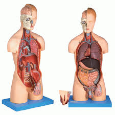

Sistem organ merupakan kumpulan organ-organ yang memiliki fungsi terkait dan bekerja bersama untuk menjalankan tugas-tugas tertentu dalam tubuh organisme. Misalnya, sistem pencernaan terdiri dari organ-organ seperti lambung, usus, dan hati yang bekerja bersama untuk mencerna makanan dan menyerap nutrisi. Begitu juga dengan sistem pernapasan yang terdiri dari paru-paru, bronkus, dan diafragma yang bekerja bersama untuk mengambil oksigen dan mengeluarkan karbon dioksida. Dengan koordinasi yang baik antara organ-organ dalam sistem ini, tubuh dapat menjalankan fungsi-fungsi penting seperti pencernaan, pernapasan, dan lainnya dengan efisien.

Kembali ke Daftar Materi